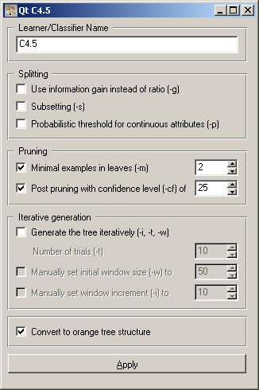
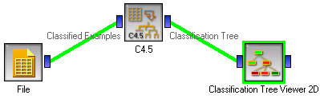

This is documentation for Orange 2.7. For the latest documentation, see Orange 3.
C4.5 Learner¶

C4.5 learner by Ross Quinlan
Signals¶
Inputs:
- Examples (ExampleTable)
A table with training examples
Outputs:
- Learner
The C4.5 learning algorithm with settings as specified in the dialog.
- Classifier
Trained C4.5 classifier
- C45 Tree (C45Classifier)
Induced tree in the original Quinlan’s format
- Classification Tree (TreeClassifier)
Induced tree in Orange’s native format
Classifier, C45 Tree and Classification Tree are available only if examples are present on the input. Which of the latter two output signals is active is determined by setting Convert to orange tree structure (see the description below).
Description¶
This widget provides a graphical interface to the well-known Quinlan’s C4.5 algorithm for construction of classification tree. Orange uses the original Quinlan’s code which must be, due to copyright issues, built and linked in separately.
Orange also implements its own classification tree induction algorithm which is comparable to Quinlan’s, though the results may differ due to technical details. It is accessible in widget Classification Tree Learner.
As all widgets for classification, C4.5 widget provides learner and classifier on the output. Learner is a learning algorithm with settings as specified by the user. It can be fed into widgets for testing learners, namely Test Learners. Classifier is a classification tree build from the training examples on the input. If examples are not given, the widget outputs no classifier.
Learner can be given a name under which it will appear in, say, Test Learners. The default name is “C4.5”.
The next block of options deals with splitting. C4.5 uses gain ratio by default; to override this, check Use information gain instead of ratio, which is equivalent to C4.5’s command line option -g. If you enable Subsetting (equivalent to -s), C4.5 will merge values of multivalued discrete attributes instead of creating one branch for each node. Probabilistic threshold for continuous attributes (-p) makes C4.5 compute the lower and upper boundaries for values of continuous attributes for which the number of misclassified examples would be within one standard deviation from the base error.
As for pruning, you can set the Minimal number of examples in the leaves (Quinlan’s default is 2, but you may want to disable this for noiseless data), and the Post prunning with confidence level; the default confidence is 25.
Trees can be constructed iteratively, with ever larger number of examples. If enable, you can set the Number of trials, the initial windows size and window increment.
The resulting classifier can be left in the original Quinlan’s structure, as returned by his underlying code, or Converted to orange the structure that is used by Orange’s tree induction algorithm. This setting decides which of the two signals that output the tree - C45 Classifier or Tree Classifier will be active. As Orange’s structure is more general and can easily accommodate all the data that C4.5 tree needs for classification, we believe that the converted tree behave exactly the same as the original tree, so the results should not depend on this setting. You should therefore leave it enabled since only the converted trees can be shown in the tree displaying widgets.
When you change one or more settings, you need to push Apply; this will put the new learner on the output and, if the training examples are given, construct a new classifier and output it as well.
Examples¶
There are two typical uses of this widget. First, you may want to induce the tree and see what it looks like, like in the schema on the right.
The second schema shows how to compare the results of C4.5 learner with another classifier, naive Bayesian Learner.